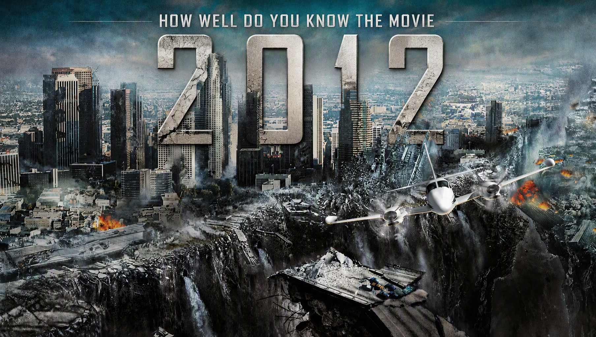

2012 Movie Quiz
Think you can survive 2012? Test your knowledge of Jackson Curtis, the global catastrophe, the arks, Adrian Helmsley, Charlie Frost and the fight for humanity's survival.
Ready? See how much you remember about the events of 2012.
This quiz contains spoilers for 2012.

ABOUT THE QUIZ
The 2012 Movie Quiz is a 25-question trivia challenge based on the 2009 disaster film 2012. The movie follows writer Jackson Curtis and his family as they attempt to survive a series of catastrophic events that threaten civilization around the world.
The story follows the discovery of a global catastrophe and the secret construction of enormous arks designed to preserve humanity. As the disasters begin, Jackson and his family struggle to reach safety while governments and scientists attempt to protect the human race.
This quiz focuses on the movie's characters, locations, survival plan, arks, disasters and major story events. It is designed for viewers who want to test how closely they remember the events of 2012.
2012 Movie Details
Release year: 2009
Director: Roland Emmerich
Genre: Disaster, science fiction and action
Main character: Jackson Curtis, played by John Cusack
Key characters: Adrian Helmsley, Charlie Frost, Kate Curtis, Yuri Karpov and Carl Anheuser
Central survival plan: The construction of massive arks designed to preserve human life.
What This Quiz Covers
The questions are based on details shown or established in 2012. Some questions focus on characters and their relationships, while others test your memory of specific disasters, locations and survival events.
Characters
Questions may cover Jackson Curtis, Kate Curtis, Noah, Lilly, Adrian Helmsley, Carl Anheuser, Charlie Frost, Yuri Karpov, Satnam Tsurutani, Nima and other important characters.
The Global Catastrophe
The quiz includes details about the disasters that occur throughout the movie, including earthquakes, volcanic eruptions, flooding and other catastrophic events.
The Arks
The enormous arks are central to the movie's survival plan. Questions can test your memory of their construction, purpose, capacity and the characters' attempts to reach them.
Jackson's Journey
The quiz covers Jackson Curtis's journey across the United States and his attempts to protect his family while the world around them collapses.
Science and Survival
Questions may also cover the scientific explanations, government preparations and survival decisions that form an important part of the movie's story.
How Quiz Works
The quiz contains 25 questions. Every question has four possible choices, but only one answer is correct. Read each question carefully and select the answer you believe is correct.
Each correct answer gives you 1 point, while an incorrect answer gives you 0 points. With 25 questions in total, your correct answers are converted into a final percentage.
Your final result represents how many questions you answered correctly. The result categories are based on your performance across the 25 questions.
Quiz Navigation
Starting the Quiz
Select START QUIZ on the opening screen to begin. The first question will appear with four possible answers.
Selecting an Answer
Read the question and all four choices before making your selection. Once you choose an answer, the quiz will continue to the next question.
Next and Back Buttons
Use Next to move forward through the questions. The Back button allows you to return to an earlier question and review or change your selection. Your question number and progress are displayed as you move through the quiz.
Finishing the Quiz
Continue until all 25 questions have been answered. When you reach the end, submit your answers to finish the quiz and view your final score and knowledge result.
Try Again and Challenge Friends
After viewing your result, select TRY AGAIN to replay the quiz and attempt a higher score. You can also use SHARE MY RESULT or CHALLENGE YOUR FRIENDS to share your result.
FAQ
How many questions are in the quiz?
There are 25 questions in total, and every question has four possible choices.
What is the maximum score?
The maximum result is 100%. Each correct answer contributes 1 point before the score is converted into a percentage.
What topics are covered?
The quiz covers 2012, including Jackson Curtis, Kate Curtis, Adrian Helmsley, Charlie Frost, Yuri Karpov, the arks, the global catastrophe and major survival events.
Is this quiz only about the characters?
No. Character questions are only part of the quiz. Other questions cover the disasters, survival plan, arks, locations, scientific discoveries and important plot details.
Which movie does this quiz cover?
This quiz focuses on the 2009 disaster film 2012, directed by Roland Emmerich and starring John Cusack as Jackson Curtis.
Do I need to watch the movie before taking the quiz?
It is recommended. The questions are based on events, characters and details from the movie, including information that may be difficult to answer without having watched it.
What does my score mean?
Your percentage shows how many of the 25 questions you answered correctly. A higher percentage means you correctly remembered more of the movie's details.
Can I take the quiz again?
Yes. Select TRY AGAIN after completing the quiz to start another attempt and try to improve your score.
Can I challenge my friends?
Yes. Select CHALLENGE YOUR FRIENDS after completing the quiz to share the challenge and see whether your friends can beat your score.
Spoiler Warning
This quiz contains spoilers for 2012. Questions may reveal important details about the global catastrophe, the arks, Jackson Curtis, the survival plan and other major events from the movie.
If you have not watched 2012, consider watching the movie before taking the quiz to avoid having important story details revealed.